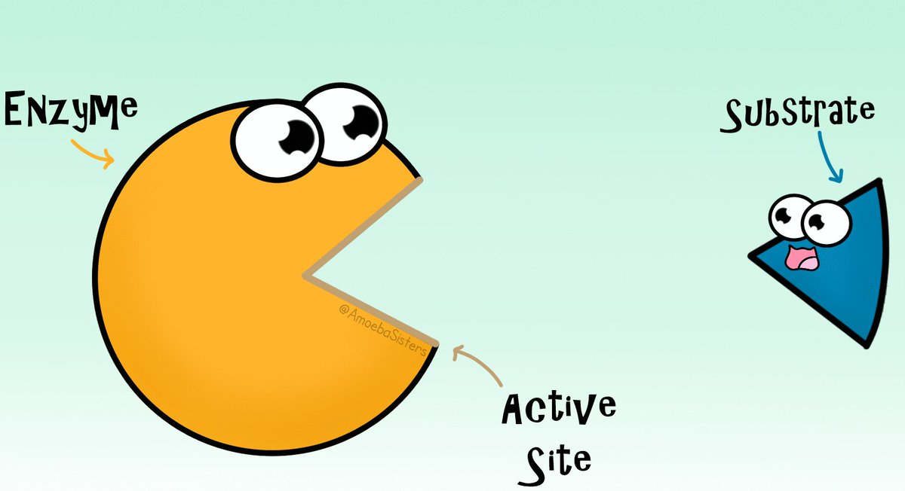

Enzymes are responsible for speeding up chemical reactions. In other words, they are catalysts that bind to other substances called substrates. The majority of them are classified as proteins, while others as RNA (ribonucleic acid) molecules.
Thousands of enzymes are found within each cell which enables the human body to properly respirate, digest food and detoxify itself. They do this by breaking down larger molecules into smaller molecules so that they can be absorbed.
Since enzymes have the ability to bind with substrates, it can also be interpreted as Pac-Man eating the golden pellets. The section where they connect is known as the active site.
